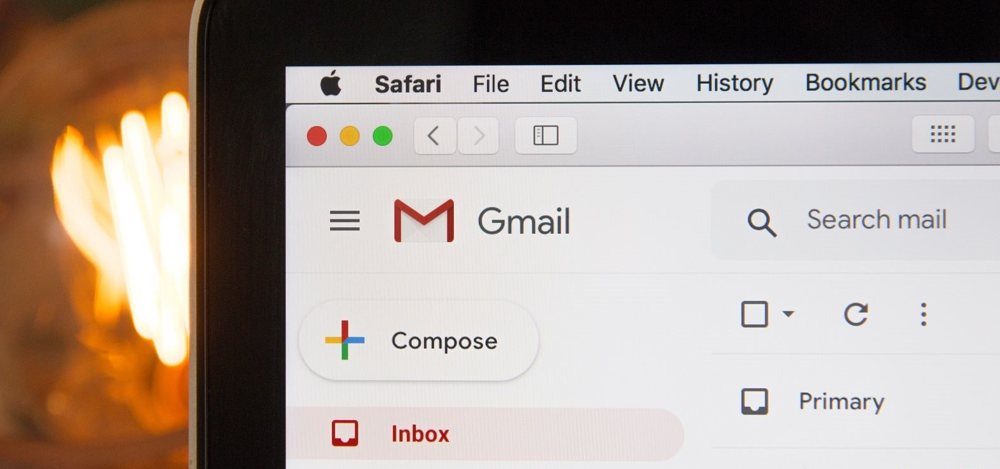

III.Time Flow in Motion:A Case Study
LifeHack's Time Flow System is first and foremost a pragmatic tool for taking on life's toughest
everyday hurdles. We're all about small wins and flexible strategies that work even in the most
chaotic schedules. So, no matter how jam-packed your day seems, success is within reach.
In this section, we'll delve into a range of daily scenarios, demonstrating how it can address
fundamental issues and pave the way for your success.
Read time: ~20 mins

You start each day with a meticulously planned morning routine. This routine is your anchor,
believed to set the stage for a productive and fulfilling day ahead. You're determined and
clear-minded with the expectation that your morning activities, including light exercise and a
nourishing breakfast, will invigorate your body and mind.
You see this consistent routine is your secret weapon, aligning your mindset with the belief that
self-care is an essential part of achieving success.
When Reality Hits...
Things always get in the way. Sometimes it's a sudden urgent work call or email. Or yourspouse or kids needing your attention with something. There's always something. Your initial
determination gives way to frustration and a sense of being torn between self-care and other
responsibilities. The unexpected disruption disrupts your inner calm and challenges your
belief in the sanctity of your morning routine.
Caught between the need to address other demands and your commitment to self-care, you
reluctantly try to do both. This compromise leaves you dissatisfied, feeling like you've let
yourself down. Your morning routine, once a source of strength, now feels fragile, and you
find it difficult to regain the focus and serenity you once enjoyed. The conflict leaves you with
a sense of imbalance and frustration.
In The Time Flow System
We don't set repetitive routines for the sake of having a routine. Everything is aligned towards
a goal.
1. The first thing we'd change is to give yourself a solid North Star
target
What are you trying to achieve in your Morning? - Better work life balance?
- Healthier exercise and diet?
keyword is to focus. Each morning your actions should be trying to make progress on
something. Here's an example of how using the Time Flow System would break it down:
North Star: "Maximize my mornings for health, energy and fitness"
2. The second step is to setup simple initiatives based on concrete
areas of progress
In the Time Flow App, our A.I. Copilot can immediately recommend some for you based on your North Star. Here are some examples that we created:
Prioritizing Nutritious Breakfasts - for collecting a variety of quick & healthy breakfast ideas
that can be prepared in 20 minutes. A growing list that you can experiment with to bring more
variation and life to your mornings.
Creating a Positive Mindset Ritual - ideas for various mindful sessions, breathing exercises,
and light activities to eliminate morning brain fog, feel refreshed and clear your mind.
Optimize Sleep Schedule - ways to further optimize your sleep so that you always wake up
feeling rested and refreshed. Sometimes you need that extra 15 minutes of sleep. This
project is for collecting Action Recipes to give you more options for that.
Each of these is a different angle to achieve our North Star of maximizing mornings for
health, energy and fitness. With this guiding goal as our compass, we can make sure that
every idea and action is aligned and worthwhile.
3. Gather Action Recipes that you can "drag & drop" into your
morning sessions
These are ideas that you collect, refine and turn into ready-to-go action blueprints. Each
Action Recipe is specific:
- It has a clear set of actions, steps or tasks
- It has a clear amount of time needed
- and it helps you make some sort of solid progress towards your milestones.
When you have a bunch of well designed Action Recipes, the next step is easy. You just have
to pick which ones to execute and run. The magic of this is that it's not set in stone. Because
life is chaos! But with the Time Flow System, you can just substitute one action recipe for
another when unexpected things happen. The most important thing is that you know that
you're making progress regardless. No regret, frustration, or half-effort compromises.
For example, if you find yourself particularly rushed one morning, you can pick 3 of the
quickest actions from each of your initiatives and combine them into a new routine on the fly.
If you have more time, you can change it up and focus more on your morning mental rituals.
It's flexible!
Ready to Reclaim Your Time?
Email Overload: The Daily Grind

On average, we spend up to 4 hours a day reading, writing, and managing emails, which is
more than half the average workday. For most people, it starts as one of the first things you
do in the morning... and quickly becomes a part of your daily grind.
If you care about your productivity, you've surely approached this with lofty goals. Trying to
find the perfect email system to achieve "inbox zero", keep tasks in check, and stay
responsive and in control.
When Reality Hits...
The daily reality of handling emails often brings unforeseen challenges. High email volumes
can quickly become overwhelming, causing stress. Balancing urgent messages with
important tasks can lead to a shift from strategic work to constant firefighting.
Miscommunication due to the absence of tone and misunderstandings can lead to tension.
Email becomes a whole job in of itself.
In The Time Flow System
Instead of simply setting aside time to process emails, we take a goal oriented mindset.
Instead of treading water, we want to make progress with each email related session. Here's
how you can make instant progress using the Time Flow System:
1. Set an ambitious target to reduce email time/effort by 50%
Because 80% to 90% of your incoming email is simply not worth the time, attention and focus
that you currently spend on it. A big ambitious target gives you a benchmark. Just imagine
how much time you'd save each day.
2. Set two powerful initiatives to attack it from different angles:
The first Initiative is called the Inbox Simplicity Sprint, with daily actions that's aimed at just one
thing: helping you simplify incoming emails so that you can
- Easily know which emails are important
- Which ones can wait
- And which ones you can get rid of
It's a simple system to that takes just 15 to 20 minutes a day to increasingly automate the
process of sorting, filtering and categorizing incoming emails. At the end, this system should
help you automatically sort, categorize and tag 80% of emails for you... constantly changing
to fit your needs.
On average, we spend up to 4 hours a day reading, writing, and managing emails, which is
more than half the average workday. For most people, it starts as one of the first things you
do in the morning... and quickly becomes a part of your daily grind.
If you care about your productivity, you've surely approached this with lofty goals. Trying to
find the perfect email system to achieve "inbox zero", keep tasks in check, and stay
responsive and in control.
When Reality Hits...
The daily reality of handling emails often brings unforeseen challenges. High email volumes
can quickly become overwhelming, causing stress. Balancing urgent messages with
important tasks can lead to a shift from strategic work to constant firefighting.
Miscommunication due to the absence of tone and misunderstandings can lead to tension.
Email becomes a whole job in of itself.
In The Time Flow System
Instead of simply setting aside time to process emails, we take a goal oriented mindset.
Instead of treading water, we want to make progress with each email related session. Here's
how you can make instant progress using the Time Flow System:
1. Set an ambitious target to reduce email time/effort by 50%
Because 80% to 90% of your incoming email is simply not worth the time, attention and focus
that you currently spend on it. A big ambitious target gives you a benchmark. Just imagine
how much time you'd save each day.
2. Set two powerful initiatives to attack it from different angles:
The first Initiative is called the Inbox Simplicity Sprint, with daily actions that's aimed at just one thing: helping you simplify incoming emails so that you can
- Easily know which emails are important
- Which ones can wait
- And which ones you can get rid of
process of sorting, filtering and categorizing incoming emails. At the end, this system should
help you automatically sort, categorize and tag 80% of emails for you... constantly changing
to fit your needs.
The second Initiative is to Streamline Your Communications, to process and respond to
emails more efficiently, using less time and effort. We can cut this down significantly with
just three simple strategies that can be done on a daily basis.
1. The Swift 5-Step Email Digest
An easy 5-step process designed for lightning-speed email processing within 30 seconds.
Effortlessly extract key information, and act promptly in half a minute or less.
- Scan the Subject Line & Sender.
- Read Opening and Action Items.
- Check for Deadlines and Attachments.
- Scan for Relevant Details.
- Flag and Take Immediate Action.
Setup Email Messaging Templates
Schedule a fixed time each day to create message templates for common responses and
email messages. Here are the Top 5 Cases:
- Frequent Usage
- Standard Procedures
- Time-Sensitive Responses
- Event Invitations or Confirmations
- Recurring Inquiries
3. Leverage A.I. Communication Assistance
Combine A.I. Copilots and message templates into a system the takes your communication
efficiency and effectiveness to a new level.
A.I. communication assistance is like having a smart helper for your emails. It can provide
writing suggestions and improvements, and help you shape your message the way you intend
to with better words and expression.
Using these 3 initiatives as our base of action, you'll develop an increasingly automated and
efficient email management system day by day. The great thing about this is that your system
will grow and evolve with your circumstances and needs, instead of being a fixed rigid
method that hinders your productivity.
Download the sample Action Recipe
Break Free from Daily Grind
Health Sacrifices: Stress Takes a Toll
In the beginning, your commitment to a healthy lifestyle is strong. You have a clear plan:
regular exercise routines, balanced and nutritious meals, and an unwavering belief in the
importance of long-term health and well-being. Your mindset is firmly rooted in the idea that
taking care of your physical health is an investment that will pay off in the long run. You have
high expectations for yourself in terms of maintaining this healthy lifestyle, and you expect to
reap the rewards of increased energy, vitality, and overall well-being.
When Reality Hits...
The demands of a stressful workweek present unexpected challenges. Long hours, tightdeadlines, and work-related pressures start to encroach on your carefully planned health
routines.
The need to meet professional commitments sometimes forces you to neglect your health.
You start skipping your 5pm workout, grab fast food for convenience, or sacrificing sleep to
catch up on work. These compromises lead to a slippery slope as you start to make more and
more compromises.
In The Time Flow System
Health and self-care routines are sprinkled throughout your day, no matter how busy orchaotic it seems.
The biggest areas to reclaim this is from your Time Gaps. This is the unaccounted-for time
lost between the cracks amidst daily activities. Time Gaps devour a staggering 20% to 50%
of your day. Left unchecked, they lead you back into the abyss of random activities – the 'busy
but mediocre' loop, where social media, distractions, and mindless tasks dominate your days.
So instead of relying on activities that require large fixed blocks of time, the strategy
changes to focusing on lots of short and flexible progress sessions that deliver small wins
throughout the day.
For example, we can immediately setup 3 initiatives to collect Action Recipes of flexible
exercises and stress relief sessions:
1. Light Stretching Routine
- Estimated Time: 10-15 minutes
- Light stretching routines are designed to increase blood flow and improve flexibility. It
helps reduce muscle stiffness and keeps your body fresh for more vigorous activities
throughout the day.
I. Neck Stretches (2 minutes):
- Slowly tilt your head to the right, feeling a gentle stretch on the left side of your neck
- Hold for 15 seconds and repeat on the left side.
- Slowly nod your head forward and backward, feeling the stretch along the back of your neck.
II. Shoulder Rolls (1 minute):
- Roll your shoulders backward in circular motions for 30 seconds.
- Roll your shoulders forward in circular motions for another 30 seconds.
III. Arm and Chest Stretches (2 minutes):
- Extend your right arm straight in front of you at shoulder height.
- Use your left hand to gently pull your right fingers back towards you, stretching the arm.
- Hold for 15 seconds and repeat on the left side.
- Place your hands behind your back, interlace your fingers, and lift your arms slightly to
stretch your chest.
IV. Spine Twist (1 minute):
- Sit on the edge of your bed or a chair with your feet flat on the floor.
- Twist your torso to the right, placing your left hand on your right knee and your right
hand behind you. - Hold for 30 seconds and repeat on the left side.
V. Forward Bend (1 minute):
- Stand with your feet hip-width apart.
- Slowly bend forward from your hips, reaching towards your toes or the floor.
- Hold the stretch for 30 seconds.
VI. Hip Flexor Stretch (1 minute):
- Step your right foot forward into a lunge position.
- Lower your left knee to the ground and push your hips forward.
- Hold the stretch for 30 seconds and repeat on the left side.
2. 15-Minute Cardiovascular Exercise Routine
- Estimated Time: 15 minutes
- This 15-minute cardiovascular exercise routine is a quick and effective way to get your
heart rate up and boost energy levels. It's perfect for days when you have limited time
but still want to engage in a short burst of cardio activity.
I. Warm-up (2 minutes):
Start with some light jogging in place or jumping jacks to warm up your body.II. High Knees (2 minutes):
Stand in place and lift your knees as high as possible while jogging in place. Aim for quick and controlled movements.III. Jump Rope (2 minutes):
If you have a jump rope, use it for this exercise. Jump rope continuously for 2 minutes.IV. Squat Jumps (2 minutes):
Stand with your feet shoulder-width apart, perform a squat, and explosively jump up. Land softly and immediately go into the next squat.V. Mountain Climbers (2 minutes):
Get into a plank position and bring one knee towards your chest, alternating legs quickly in a running motion.VI. Cool Down (2 minutes):
Finish the routine with some slow marching in place or walking around to cool down your body..3. Mindful Focus Session
- Estimated Time: 5-20 minutes
- A short but valuable pause for you to regain clarity and productivity. It allows a step back from distractions, enhancing mental clarity and awareness. This short but purposeful interval aids in prioritizing tasks, reducing stress, and optimizing decision-making, ultimately improving efficiency and well-being.
Session Selection (from LifeHack's Mindful Audio collection):
- Mindful Reflection (8 minutes)
- Breathing to Calm Down (5 minutes)
- Creative Downtime (13 minutes)
- Mindful Stretching (20 minutes)
- and over 20 more exercises...
With a large collection of simple but ready-to-go Action Recipes, they can easily fill in
unexpected gaps in your schedule, or combined together into longer more in depth sessions.
With these filling in your daily routine, you don't need to wait for the weekend for self-care
and relaxation.